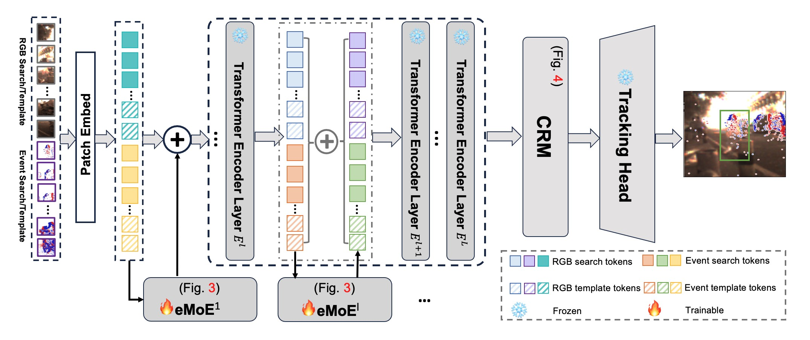
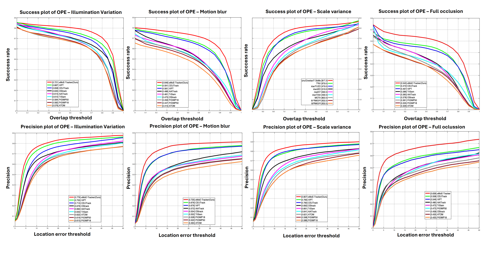
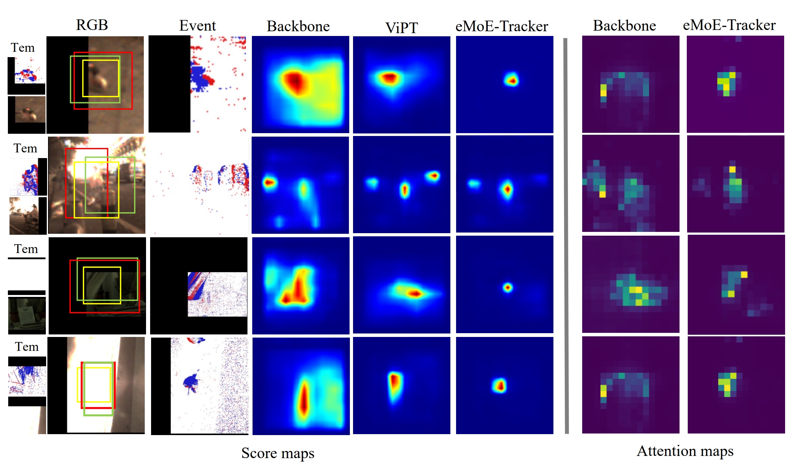
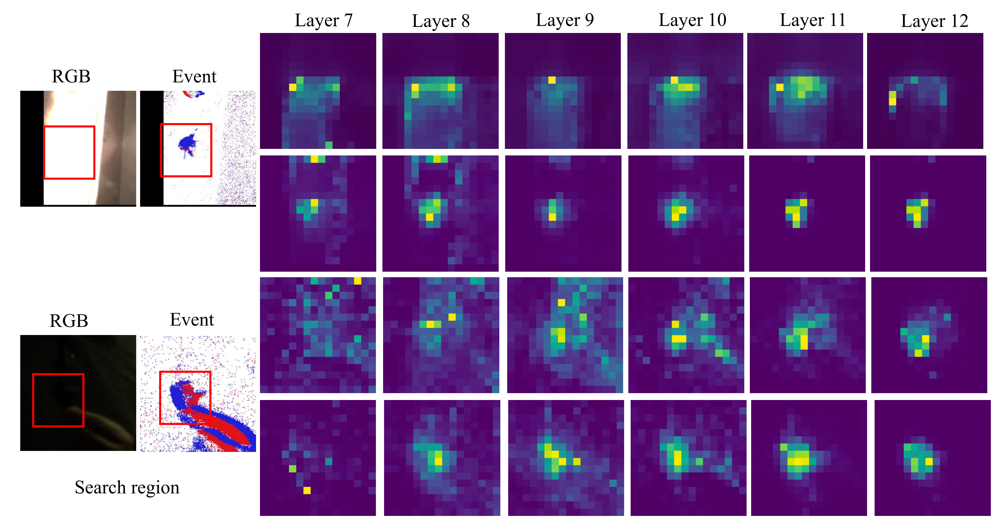

eMoE-Tracker: Environmental MoE-based Transformer for Robust Event-guided Object Tracking
-
Yucheng Chen
AI Thrust, HKUST(GZ)
-
Addison Lin Wang
AI & CMA Thrust, HKUST(GZ)
Dept. of CSE, HKUST

Abstract
The unique complementarity of frame-based and event cameras for high frame rate object tracking has recently inspired some research attempts to develop multi-modal fusion approaches. However, these methods directly fuse both modalities and thus ignore the environmental attributes, e.g., motion blur, illumination variance, occlusion, scale variation, etc. Meanwhile, no interaction between search and template features makes dis- tinguishing target objects and backgrounds difficult. As a result, performance degradation is induced especially in challenging con- ditions. This paper proposes a novel and effective Transformer- based event-guided tracking framework, called eMoE-Tracker, which achieves new SOTA performance under various conditions. Our key idea is to disentangle the environment into several learnable attributes to dynamically learn the attribute-specific features for better interaction and discriminability between the target information and background. To achieve the goal, we first propose an environmental Mix-of-Experts (eMoE) module that is built upon the environmental Attributes Disentanglement to learn attribute-specific features and environmental Attributes Gating to assemble the attribute-specific features by the learnable attribute scores dynamically. The eMoE module is a subtle router that fine-tunes the transformer backbone more efficiently. We then introduce a contrastive relation modeling (CRM) module to improve interaction and discriminability between the target information and background. Extensive experiments on diverse event-based benchmark datasets showcase the superior perfor- mance of our eMoE-Tracker compared to the prior arts.
Video
The overall framework of our eMoE-Tracker.
Our eMoE-Tracker consists of two modules: The eMoE module disentangles the environment into several learnable attributes to learn attribute-specific features and assemble them by attribute gating scores for discriminative tracking representation. Then, CRM module is responsible for improving the interaction between search region and target template, thus enhancing the target objects.
Tracking performance on four environmental attributes.
Visualization on score maps and attention maps.
Visualization of attention maps from 7th-12th encoder layers after inserting eMoE module.
BibTeX
@article{ExACT,
title={ExACT: Language-guided Conceptual Reasoning and Uncertainty Estimation for Event-based Action Recognition and More},
author={Zhou,Jiazhou, Zheng,Xu, Lyu,Yuanhuiyi and Wang,Lin},
journal={The IEEE/CVF Conference on Computer Vision and Pattern Recognition (CVPR)},
year={2024}}